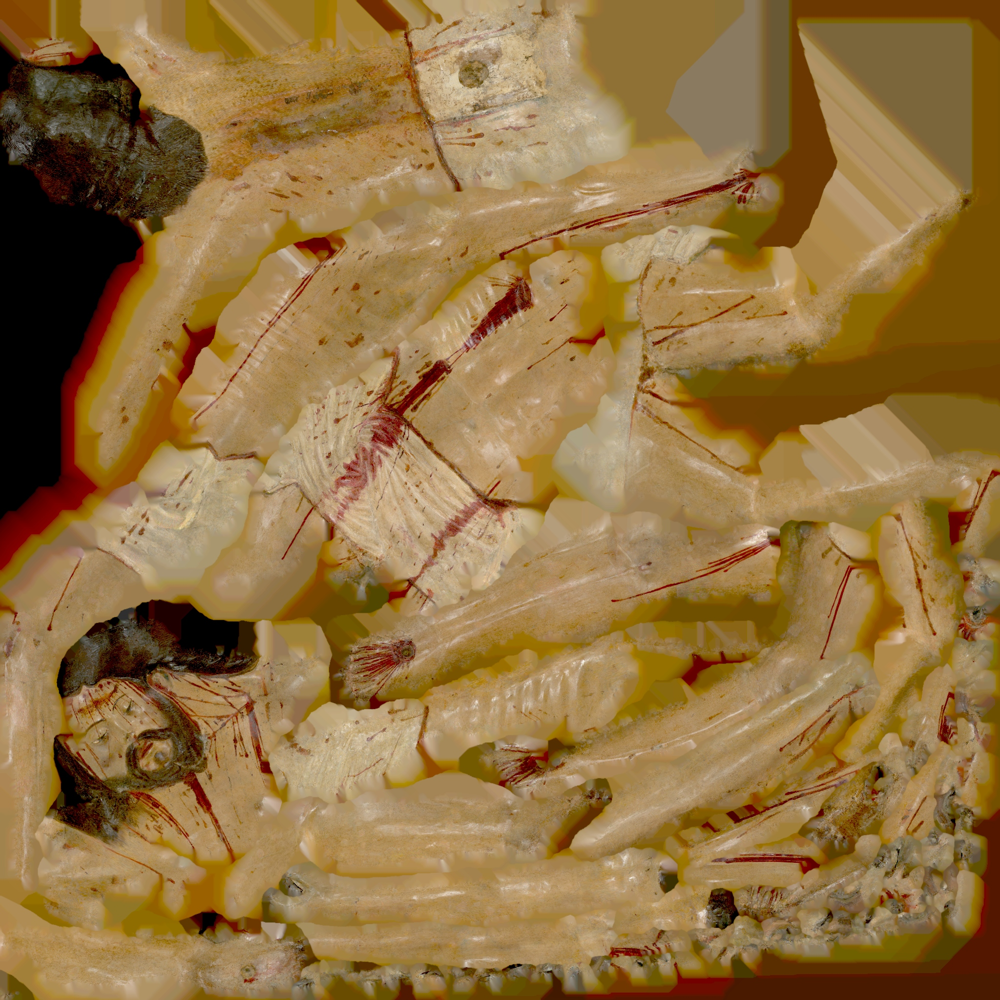
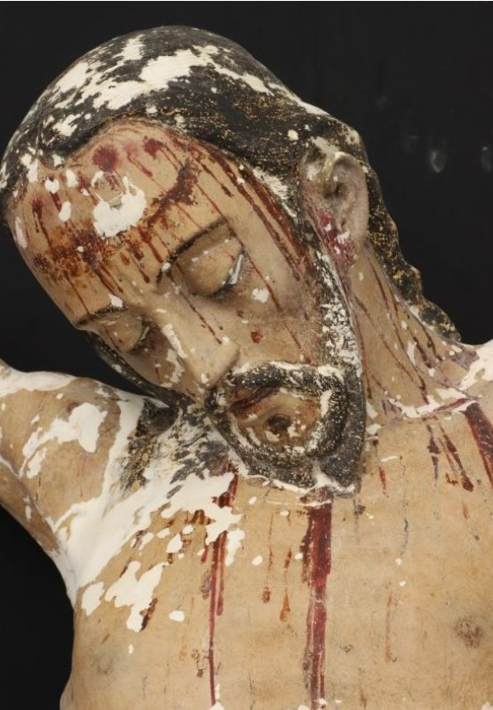
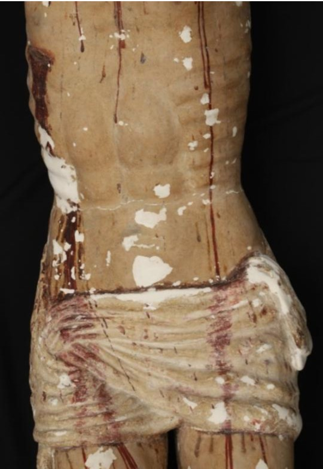

La obra


La escultura representa a Cristo crucificado en el momento de la expiración...
La escultura representa a Cristo crucificado en el momento de la expiración...
Antes de la intervención, la obra presentaba importantes pérdidas...


Los estudios radiográficos permitieron comprender la estructura interna...


El proceso incluyó la eliminación de capas añadidas y consolidación...




La intervención ha permitido recuperar la lectura original de la obra...